¡Hola!Es un gusto saludarte, mi nombre es Mateo y te acompañaré en el desarrollo de esta solución. Si estás leyendo, escuchando o viendo esto es porque estás interesado/a o tienes curiosidad en saber cómo mejorar la señal de tu celular de manera muy sencilla. Si es así, estás en el lugar indicado.
¿Para qué sirve esta solución?
Esta solución permite mejorar la señal de tu celular de manera provisional. Es decir que ayuda a mejorarla, pero ten en cuenta que la calidad de la señal depende también de otros factores externos como son el clima, las condiciones del lugar en el que te encuentres, tu operador y la cantidad de torres que emiten ondas de radio a tu alrededor para permitir llamadas o la navegación por internet.
Esta solución que te comparto es una opción sencilla, rápida y muy interesante. Verás que los resultados de esta prueba son emocionantes y reveladores.
¿Qué necesitas?
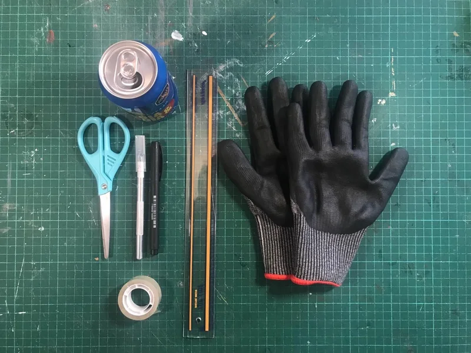
- Una persona para trabajar en esta solución es suficiente. Aunque en compañía todo se resuelve más fácil. ¡Anímate!
- Una lata metálica limpia, puede ser de alguna bebida.
- Una tijera.
- Bisturí (opcional).
- Una regla, preferiblemente metálica.
- Un marcador de punta fina.
- Cinta transparente gruesa.
- Guantes de seguridad.
¡Antes de empezar, algunas cuestiones de seguridad!
Si bien esta solución tiene un nivel de dificultad básico, es importante que tengas en cuenta algunas recomendaciones para tu seguridad:
- Trabaja en una superficie plana y rígida, preferiblemente en una mesa en la que puedas cortar.
- Busca una lata limpia que no este oxidada.
- Te recomendamos estar en un lugar tranquilo, sin distracciones y que tengas todo el tiempo y la paciencia posible.
- Mantén tus manos a una distancia segura de los cortes que realizarás con las tijeras o con el bisturí.
- Preferiblemente, usa guantes de seguridad.
- Te recomendamos estar sentado en un lugar cómodo para trabajar.
¿Cómo hacerlo?
Esta solución tiene 3 pasos a través de los cuales yo te acompañaré. Ten en cuenta que algunos de ellos pueden ser frustrantes y otros muy emocionantes, y ambas cosas están bien; hacen parte de “cacharrear”. Lo importante es seguir intentándolo. ¡Empecemos!
Paso 1 → Dibuja la lámina metálica base
Para empezar, prepara todos los materiales mencionados.
Luego, corta la base y la parte superior de la lata con las tijeras o el bisturí, de tal manera que quede una lámina abierta; imagina que fuera una hoja de papel rectangular. Puedes hacerlos usando tijeras o bisturí. Coloca la lata de la bebida en una superficie plana y rígida, preferiblemente en una mesa.
⚠️⚠️ Haz esto con paciencia y con cuidado, colocando tu mano a una distancia segura del corte que vas a realizar. Recuerda que la lata también corta.
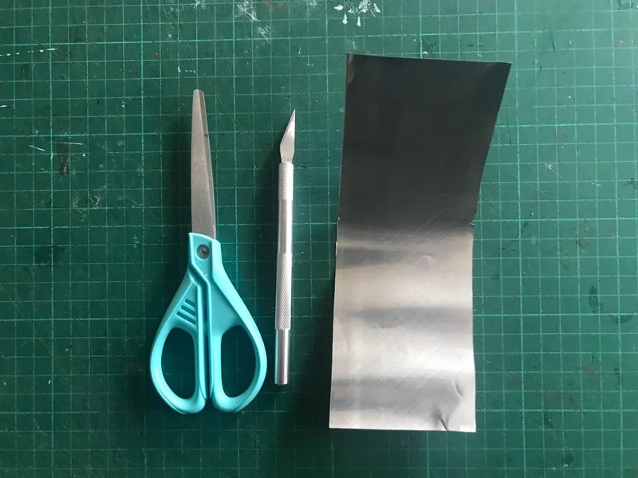
Cuando tengas la lámina rectangular recortada, aplánala hasta eliminar la mayor cantidad de irregularidades posibles en la superficie. Imagínate que debe quedar como si fuera una hoja de papel lisa. Esta será la lámina metálica con la que trabajaremos de aquí en adelante.
Con la regla y el marcador de punta fina dibuja, sobre la lámina metálica un cuadrado de 4cm x 4cm.
⚠️⚠️ Ten precaución al realizar todos los cortes. Si tienes, te recomiendo usar guantes de seguridad.
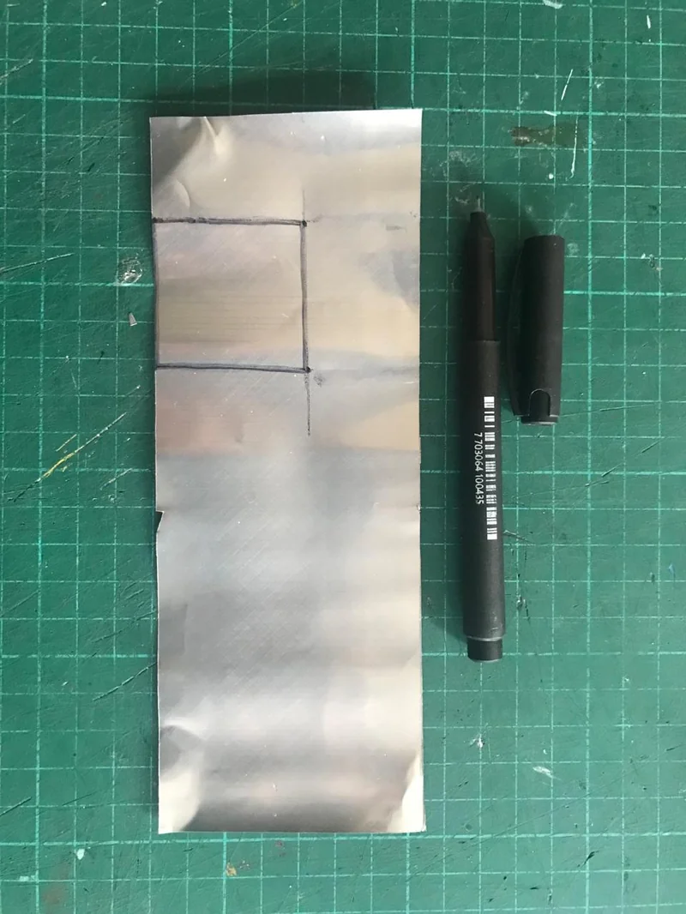
Paso 2 → Convierte la lata en una antena
Corta el cuadrado de 4 cm x 4 cm que dibujaste con las tijeras hasta obtener una lámina metálica cuadrada.
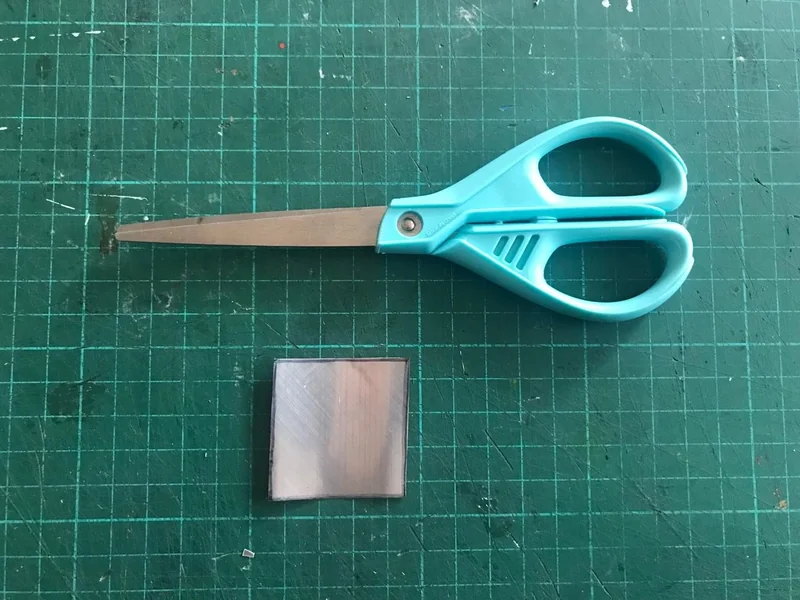
Ahora, escoge uno de los bordes de esta lámina cuadrada y señala con un marcador de punta fina el centro, es decir, a 2 centímetros del borde.
Ubica la regla en el centro que marcaste previamente y con el marcador haz dos marcas a 0,5 cm de cada lado del centro. Repite este mismo paso en el borde contrario del lado que estás trabajando. Une las marcas y traza las líneas de manera que tengas un rectángulo de 1 cm.
|
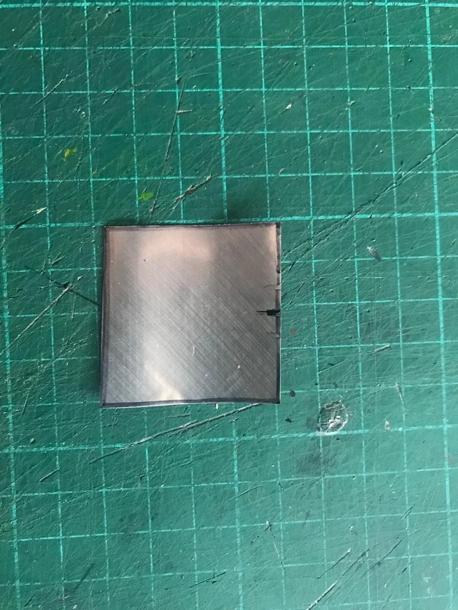 |
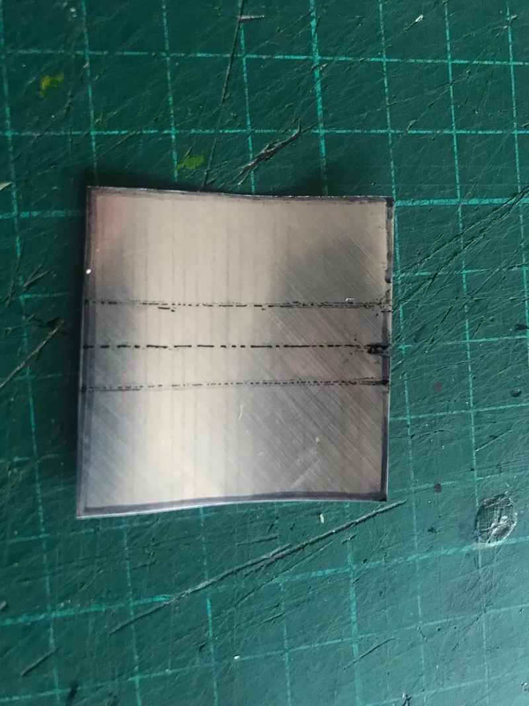 |
💬❓ ¿Cómo vas hasta el momento? Si tu lata luce como la última imagen 👆🏽, vamos por buen camino. Si no, puedes hacer un nuevo intento siguiendo los mismos pasos. No hay afán, ¡aquí te espero!
Continúa dibujando marcas cada 0.5 cm sobre cada una de las dos que ya dibujaste. Al final deberías tener 7 marcas en cada una de las líneas como se ve en esta imagen:
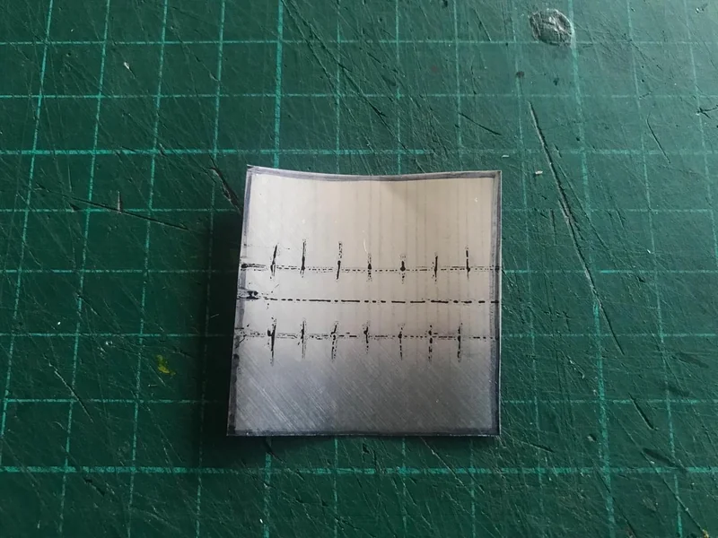
Traza líneas de lado a lado por cada una de las marcas que hiciste en el paso anterior. Luego, recorta por las 7 líneas que quedaron, sin cortar la columna central que tiene 1cm de ancho.
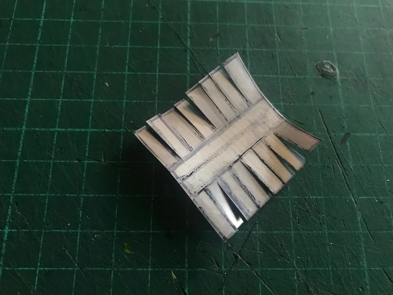
Si tu lata se ve así 👆🏽, puedes proceder a doblar una pestaña, una no: la segunda, la cuarta, la sexta y la octava. Luego, debes recortar cada una de las pestañas que quedaron dobladas.
Por último, forra tu pieza metálica por lado y lado con cinta transparente gruesa, esto te permitirá protegerla para que dure.
|
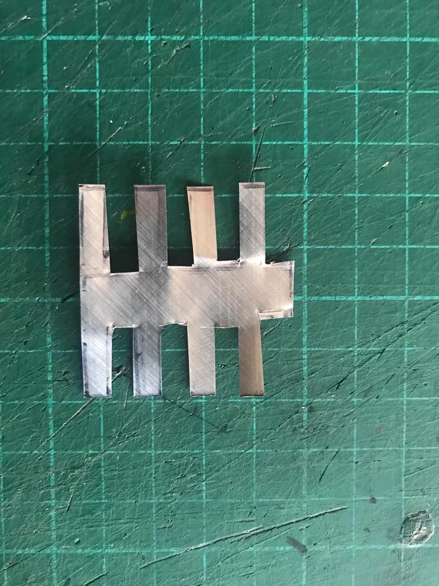 |
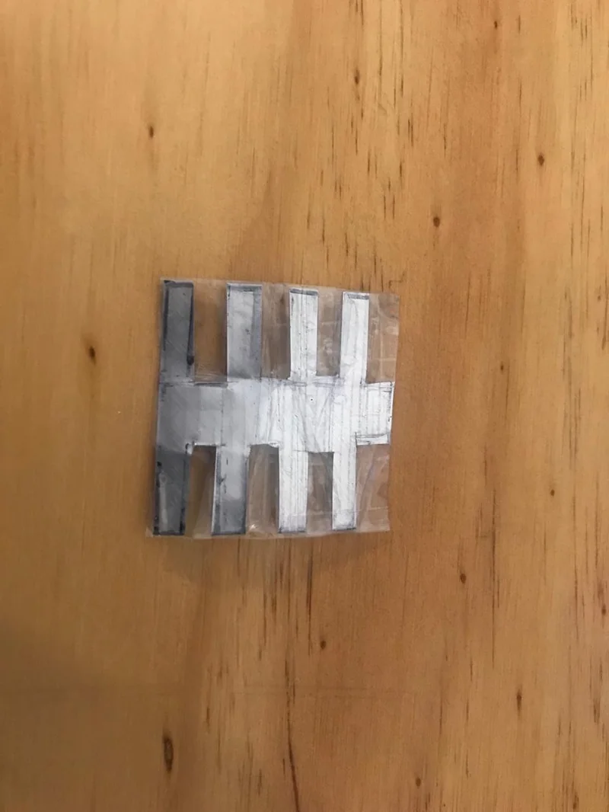 |
¡Terminamos! Ahora, la parte sencilla: usar tu lata para mejorar la señol móvil.
Paso 3 → Instala tu antena en el celular
La antena principal de los celulares suele estar en la parte trasera de tu celular, del costado superior derecho.
Usa cinta transparente para pegar esta pieza metálica en el lugar mencionado y protégela, preferiblemente, con el forro del celular que estás usando.
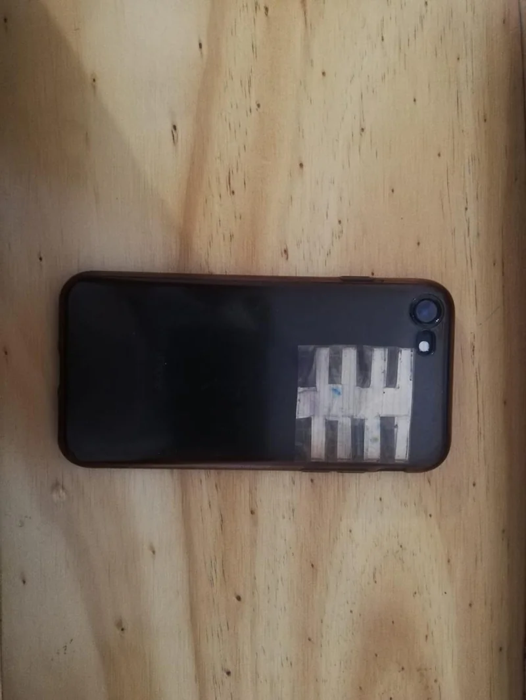
🎉💪🏽 ¡Terminamos! Ahora estás listo/a para disfrutar de una mejor señal. Felicitaciones por haber finalizado esta solución, espero que este viaje haya sido retador y emocionante.
Como ésta, en Voltaje puedes encontrar muchas soluciones más para poder conectarte sin miedo a usar el internet en grupo. ¡Animáte a neguir navegando! Ver más soluciones →
¿Cómo saber si esta solución funciona?
- La manera más fácil es revisar si las barras o puntos de señal de tu celular (ubicadas en la esquina superior izquierda o derecha de tu pantalla) cambian con y sin la lata. Estas barras miden qué tan fuerte es la señal que estás recibiendo. En teoría, entre más barras tengas, mejor debería ser la señal que estás recibiendo.
- Otra opción es medir la velocidad de descarga en tu celular. Consulta la solución “¿Cómo probar la velocidad de tu conexión a Internet?” →.
- Esta solución puede lograr una mejora significativa en la recepción de señal de tu celular en una o máximo dos barras o puntos. Ten en cuenta que la señal no puede mejorar en lugares donde nunca ha habido señal.
¿Qué puedes lograr con esta solución?
Ten en cuenta que hay dos tipos de señal: la de tu celular con la que puedes realizar llamadas y enviar mensajes de texto, y la señal del WiFi con la que puedes conectarte al internet.
Con esta solución puedes mejorar ambas señales debido a que amplifica la recepción y envío de ondas de la antena que viene incorporada en tu celular. Es una pequeña “ayudita” a dicha antena. Puedes probar esta solución en diferentes condiciones y sacar tus propias conclusiones sobre si te está funcionando o no.
Pero además, ampliar la señal de tu celular puede servirte para compartir internet con otras personas → que lo necesitan. El internet en grupo es más seguro y puede ayudar a otras personas en su trabajo, en el estudio o a disfrutar con diversas actividades de entretenimiento.
¡Te invitamos a que hagas parte de una nueva forma de usar el internet juntos! 💪🏽 Amplia tu señal, disfruta y comparte tu internet.
Gracias por llegar hasta el final de esta solución. ¡Esperamos que te haya sido útil! Y si así fue, compártela con otras personas a quienes sepas que les podría servir.
¡Hasta pronto! 👋🏽
Soluciones relacionadas
- En esta solución encuentras algunos trucos adicionales para mejorar tu señal móvil: ¿¿Cómo amplificar tu señal móvil dentro de un espacio? →
- Si lo que quieres es mejorar la señal de tu módem WiFi, puedes consultar esta solución: ¿Cómo mejorar la señal de tu router? →
Recuerda que en Voltaje ⚡⚡ puedes encontrar muchas soluciones más para conectarte sin miedo a usar el internet en grupo. ¡Animáte a neguir navegando! Ver más soluciones →
Referencias
- Artículo de la BBC: “Por qué es buena idea usar papel de aluminio para mejorar la señal de tu WiFi” →
- Video de Youtube: “Aumentar señal de tu celular con una lata funciona?” →